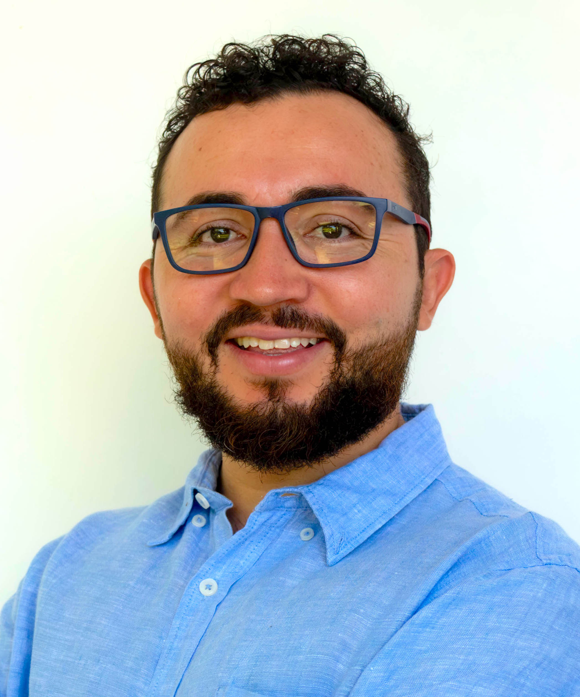

Professor Adjunto · Instituto de Arquitetura, Urbanismo e Design (IAUD)
Universidade Federal do Ceará — UFC
Editor-Chefe · Journal of Building Pathology and Rehabilitation (Springer)
Esequiel Mesquita é Professor do Instituto de Arquitetura, Urbanismo e Design (IAUD) e Coordenador do Programa de Pós-Graduação em Engenharia Civil da Universidade Federal do Ceará (UFC). Possui doutorado em Engenharia Civil pela Faculdade de Engenharia da Universidade do Porto e foi Professor Visitante no Institut National des Sciences Appliquées de Rouen (França, 2023) e na Universidade de Pisa (2024).
É Editor-Chefe do Journal of Building Pathology and Rehabilitation (Springer) e Editor-Guest do Digital Applications in Archaeology and Cultural Heritage. Membro especialista do ICOMOS e da RILEM, está envolvido em vários projetos nacionais e internacionais, com fortes colaborações na América do Sul e Europa.
Coordena o projeto Tecnologia e Inovação do Patrimônio Cultural do Ceará (FUNCAP), que promove levantamentos digitais, modelos 3D para preservação e documentação, e ferramentas inovadoras de HBIM. Sua pesquisa contempla patologia de edificações, monitoramento estrutural, patrimônio cultural, digitalização, HBIM, vulnerabilidade estrutural e mitigação de riscos de mudanças climáticas no contexto do patrimônio histórico.
Suas contribuições acadêmicas incluem mais de 120 publicações, incluindo mais de 50 artigos em importantes revistas internacionais, além de ter orientado e co-orientado alunos de graduação, mestrado e doutorado.
Avaliação e mitigação dos impactos climáticos em edificações históricas utilizando HBIM, monitoramento climático e materiais de nova geração.
Framework integrado com dados microclimáticos em tempo real dentro de modelos HBIM para gerenciamento e visualização de sítios patrimoniais.
Preservação, valorização e dinamização econômica do patrimônio histórico cearense mediante levantamentos digitais, modelos 3D e ferramentas HBIM.
Modernização e requalificação do acervo do MAUC/UFC, com escaneamento 3D de alta resolução e técnicas de fotogrametria para preservação digital.
Projeto internacional Brasil–França para desenvolvimento de tecnologias em energia verde, materiais sensores para SHM e ferramentas de mitigação ambiental.
Compósitos cimentícios com nanotubos de carbono (NTC) para sistemas de monitoramento descentralizado de estruturas de concreto armado.
Esses são os horários disponíveis para orientações e conversas com alunos de graduação, mestrado e doutorado.
As portas estão sempre abertas para uma conversa com os estudantes e pesquisadores sem agendamento prévio, de acordo com minha disponibilidade. Estou sempre bem disposto para um café descontraído!
Para uma melhor organização, é preferível que as reuniões sejam agendadas com antecedência pela Agenda Virtual. Cada reunião terá até 30 minutos de duração e pode ser realizada presencialmente ou por videoconferência (link gerado automaticamente).
Os atendimentos presenciais serão realizados no LED/DAUD e cada atendimento deverá ser restrito a um horário por aluno.
Universidade Federal do Ceará (UFC)
Instituto de Arquitetura, Urbanismo e Design — IAUD
Fortaleza, CE — Brasil
LED/DAUD — IAUD, UFC
Perfis acadêmicos e redes profissionais